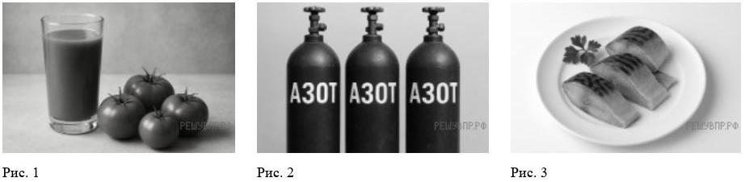

[ ДОСТУП ОГРАНИЧЕН ДЛЯ ПОСТОРОННИХ ]
Укажите номер рисунка, на котором изображён объект, содержащий индивидуальное химическое вещество.

Какие вещества содержатся в объектах на остальных рисунках? Приведите по одному примеру названия и формулы.
Укажите, в ходе какого из приведённых ниже процессов протекает химическая реакция:
Укажите один ЛЮБОЙ признак протекания этой химической реакции.
Вычислите молярные массы каждого из газов и запишите данные в таблицу.
Каким из приведённых в таблице газов следует наполнить шарик с практически невесомой оболочкой, чтобы он оказался легче воздуха (Mвоздуха = 29 г/моль) и смог взлететь? Объясните свой выбор.
Заполните физико-химические характеристики элементов А и В. Известно, что в атоме элемента А содержится 12 протонов, а в атоме элемента В — в 2 раза меньше.
Михаил съел за обедом 150 г отварного картофеля. Используя таблицу, определите, какую массу жиров в граммах получил при этом его организм.
Какую долю (в %) от суточной физиологической нормы (90 г) составляет потреблённое Михаилом количество жиров? Ответ округлите до десятых.
Напишите химические формулы следующих веществ: железо, хлор, хлорид железа(III), сульфит натрия, серная кислота, сульфат натрия, оксид серы(IV), вода.
Какое из веществ, упоминаемых в перечне, соответствует описанию: «Ядовитый газ жёлто-зелёного цвета с резким удушающим запахом»?
Выберите из перечня соединение, содержащее атомы водорода (кроме воды). Запишите его формулу и укажите класс неорганических соединений.
Выберите ЛЮБОЕ соединение из перечня, состоящее из атомов ТРЁХ элементов. Вычислите массовую долю кислорода в этом соединении.
Вычислите массу 0,6 моль железа. Ответ запишите в граммах, округлив до десятых.
Составьте уравнения указанных реакций, используя химические формулы веществ из п. 6.1 (задание 10). Используйте знак равенства (=) вместо стрелки. Вводите уравнения без пробелов.
железо + хлороводород (р-р) → хлорид железа(II) + водород
хлорид кальция + карбонат натрия → карбонат кальция + хлорид натрия
Определите тип химической реакции для любого (одного) из выбранных вами уравнений из задания 15.
Из приборов, изображённых на рисунках, выберите тот, с помощью которого можно разделить смесь железных опилок и порошка карбоната кальция.
Установите соответствие между названием химического вещества и областью его применения. Выберите правильную цифру применения для каждого вещества.
Выберите верные суждения о правилах поведения в химической лаборатории и обращении с химическими веществами в быту. (Выберите все подходящие варианты).
Ваша итоговая оценка за ВПР-8:
Данные успешно зашифрованы и отправлены на сервер лаборатории